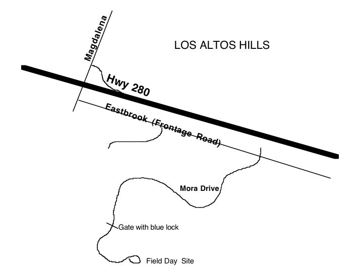

| Field Day News - 2007
If you are going to be a SSB operator at Field Day or a coach/mentor
at the GOTA
station you might want to practice your "phonetic alphabet".
For info go to
http://www.arrl.org/FandES/tbp/radio-lab/RLH%20Unit%201%20Lesson%20%231.2.doc
A = Alfa G = Golf M = Mike S = Sierra Y = Yankee
B = Bravo H = Hotel N = November T = Tango Z = Zulu
C = Charlie I = India O = Oscar U = Uniform
D = Delta J = Juliet P = Papa V = Victor
E = Echo K = Kilo Q = Quebec W = Whiskey
F = Foxtrot L = Lima R = Romeo X = X-ray
- whiskey 6 zulu zulu zulu
Field Day Package (all the info)
Go to http://www.arrl.org/contests/announcements/fd/
The package has all the info about Field Day 2007 (622,308 bytes)
as an Adobe
PDF file
Field Day June 23-24, 2007
Always The Fourth Full Weekend In June
The web page also has links for:
a.. 2007 Field Day Forms and Rules
a.. Order Field Day t-shirts, pins, supplies
a.. ARRL/Canada Section Abbreviations
a.. 2007 Field Day Press Kit
a.. US Amateur Bands
a.. ARRL Band Plans
a.. W1AW Frequencies
a.. W1AW/K6KPH Field Day Bulletin Schedule
Go to http://www.arrl.org/contests/announcements/fd/
The package has all the info about Field Day 2007 (622,308 bytes)
as an Adobe
PDF file
Field Day June 23-24, 2007
Always The Fourth Full Weekend In June
The web page also has links for:
a.. 2007 Field Day Forms and Rules
a.. Order Field Day t-shirts, pins, supplies
a.. ARRL/Canada Section Abbreviations
a.. 2007 Field Day Press Kit
a.. US Amateur Bands
a.. ARRL Band Plans
a.. W1AW Frequencies
a.. W1AW/K6KPH Field Day Bulletin Schedule
Field Day is less than 2 months away. Yee-Haw!
Current plans include the following:
We'll be operating QRP from Moran Hill in the Rancho San Antonio
Open Space Preserve (same location as last year). This is a hilltop
site above Los Altos Hills with excellent line-of-sight coverage
of the Bay Area.
This year we'll have five HF stations on the air -- a digital
HF station, a CW HF station, a GOTA station (for beginners in
HF SSB operating), along with TWO other SSB HF stations. Antennas
will include a tower-mounted yagi, a 20m quad, and a balloon-supported
80m loop. We'll also have dedicated stations on 2m, 6m and 10m,
and whatever other stations are needed to get us up to 8A.
So mark your calendars -- Field Day is June 22-24. And feel
free to send me an email if you'd like to get involved in the
preparations.
- Jim, K6EI
Field Day Coordinator
Latest FD News, 2006
Awesome Field Day Results
The results are in and can be viewed at the ARRL website. The
bottom line: WVARA did fantastic!!! Here's a quick run-down of
the results:
W6PIY scored 9,190 points in the 9AB category (i.e. 9A running
battery)
Of all 113 stations in Pacific Division, W6PIY was #6 -- in
the top 5%, very excellent!
Of the 32 stations in Santa Clara Valley, W6PIY was #3. (The
W6YX station at Stanford came in #1 but was operating from a
permanent site with fixed towers, etc -- hardly a fair comparison.
And we would have set an all-time new record score for 9A, except
that VE3MA ran up an amazing score of 19,841 -- but I'm happy
to have the second-highest 9A score in history!
Field Day Photos - Slide
Show
Band Captains
The official band captain list as of May 30, 2006
80m-15m CW K6EI
80m-15m Digital WB6TQG
80m-15m SSB AD6RY
80m-15m GOTA AD6RE
10m SSB W6ESL
6m SSB/FM N6FFC
2m SSB/FM N6FFC
220 MHz SSB/FM N6FFC
440 MHz SSB/FM N6FFC
1.2 GHz SSB/FM N6FFC
Satellite W6ESL
Field Day site walk on Saturday June 3 at
9 AM.
Meet at the gate at the end of Mora Drive.
If you missed the WVARA meeting on Wednesday Jim K6EI has posted
his map
handout from the meeting.
Or go directly to the following map links:
Topo Map -
http://topozone.com/map.asp?lat=37.3358&lon=-122.0993&datum=nad83&u=5
Map - look for the "water tank" halfway to the right
of the middle
http://www.sccgov.org/SCC/docs%2FParks%20and%20Recreation%2C%20Department%20of%20%28DEP%29%2Fattachments%2F40501ranchspm.pdf
Picture - the flattest area is just East of the water tank
http://maps.google.com/maps?f=q&hl=en&q=37.3358+-122.0993&ll=37.335796,-122.099304&spn=0.007328,0.016758&t=h
Date - June 23-25
(setup starts Friday 11AM, operation is 11AM Saturday to 11AM Sunday)
Rules - http://www.arrl.org/contests/forms/06-fd-packet.pdf
Call - W6PIY
Category - ?AB battery/QRP (number of simultaneous transmitters, see Note 2)
Location - Mora Hill, Rancho San Antonia Open Space Preserve (access is Mora
Drive)
Lat/Long - 37.3358 -122.0993
FD Chair - Jim K6EI
Committee - Scott AD6RY, Bill N6FFC, Marc W6ZZZ, Phil WB6TQG
----------
Bonus Points (sections 7.3.1 - 7.3.15 of the Field Day Info
Package)
100 points for each item unless noted otherwise
1. 100% Emergency Power (petrol) - ? (100 points/station, free
VHF, GOTA and Sat excluded)
2. Media Publicity (invited) - N6FFC done (only need to invite
them to get the bonus)
3. Public Location - K6EI done (MROSD Mora Hill)
4. Public Info Table - ?
5. NTS message to Section Mgr - ?
6. Formal NTS Messages (10+) - ? (10 points each with a max of
10 messages)
7. Satellite QSO (only need 1) - ?
8. Alternate power (5+ QSOs) - ? (minimum 5 QSOs made using natural
power)
9. Copy W1AW Bulletin - WB6TQG (RTTY Friday at 6:00 PM)
10. Non-traditional Mode Demonstrations (maximum of 3 x 100 points
each)
a. APRS - ?
b. Packet - ? (needs to be a complete portable packet network)
c. SSTV - ?
d. ATV - ?
11. Site Visit, Elected Govt Off - N6FFC (they have to visit the site to get
this bonus)
12. Site Visit, Served Agency - W6ZZZ, Loma Prieta MERC (Red Cross), served
by ARES
(they have to visit the site to get this bonus)
13. GOTA Station Max (5 x 100) - ? (additional 2x bonus if a full time mentor/coach)
14. Web Submission of Results - K6EI (this is a 50 point bonus)
15. Youth (<18 age) Participation - ?, (20 points each, max of 5 youths
making a QSO)
Site Operations
Reminder #1 - no open flames at Mora Hill (no campstoves, Coleman-type
lanterns, etc.)
Reminder #2 - no generator running after sunset or before 7 AM
(quiet time)
Site cleanup coord - ?, everyone needs to take a garbage bag
home
(leave the site cleaner than when we arrived,
check the grounds before leaving for tape, cable ties, etc.)
Safety Officer - ?
Food, Drinks, Etc* - ?
Guest Greeters - ?
Digital Photos - ?
Video Camera - ?
*Club provided food, drinks, etc.
Plates - 50?
Utensil sets - 50?
Napkins/towels - ?
Cups (hot/cold) - 100?
Ice - x lbs
Sodas (assorted) - xx regular, yy diet
Bottled water - ?
Lemonade mix - 2 cans, regular and sugar free
Iced tea mix - 2 cans, regular and sugar free
Coffee - x lbs
Other things? - ?
Note 1:
Plan is to switch
HF antenna sets between a single CW, Digital (PSK-31 and RTTY),
SSB and GOTA station on a rotating basis. GOTA always gets
the "lesser" antenna
in the rotation if there are two antennas available for that
particular band.
Station captains
CW - K6EI
Digital - ?
SSB - ?
GOTA - AD6RY
Note 2: (free stations)
Rule 4.1.1. Get-On-The-Air (GOTA) Station. Any Class A or F
entry whose transmitter classification is two or more transmitters
may also operate one additional HF station without changing its
base entry category, known as the GET ON THE AIR (GOTA) station.
Rule 4.1.2. Extra VHF Station: Any Class A entry whose category
is two or more transmitters may also operate one additional transmitter
if it operates exclusively on any bands or combination of bands
above 50 MHz (VHF/UHF) without changing its basic entry classification.
This station does not qualify for a 100-point bonus as an additional
transmitter.
Rule 7.3.7. Satellite QSO: .... Groups are allowed one dedicated
satellite transmitter station without increasing their entry
category.
Subscribing to WVARA's Field Day Email
List:
It's time to start "building momentum" to
another all-time Field Day record!
If you would like to subscribe to our Field
Day email list, please email
your request to postmaster@wvara.org.
Contents
Field Day is the biggest
event on the USA ham radio calendar each year. More than 2,200
ham radio clubs and 35,000 hams will participate in this one weekend
of activities (for more information about Field Day, see the What
is Field Day sidebar).
Radio
Stations at Field Day
One other important aspect of Field
Day is that hams can operate on modes and bands that they can't
normally use. Hams that have HF privledges often act as control
operators at their stations allowing those without HF privledges
to operate on the HF bands. Many a new ham has gotten their first
taste of HF operating at Field Day. For more information, see the How
to Contest sidebar.
Here is a list of who are the Field
Day Band Captains (station coordinators). If you wish to volunteer
to help with their station, please send e-mail to "Their Call"@WVARA.ORG
or contact the Field Day Coordinators.
We are always looking for more volunteers.
Previous
Field Days
Follow the links below for information and
pictures from past WVARA Field Day sites:
For
more information
For rules and more information see the ARRL
Field Day web page.
For an overview of the 1994-2002 Field Day
efforts see WVARA
Field Day Through the Years.
|
WVARA FD Quick Links
WVARA Field Day Band Captain's Handbook
WVARA Field Day Station Checklist (54K
PDF)
WVARA's FD
mail list
WVARA Field Day History
What is Field Day?
That's a good question, and if you asked ten hams, you would probably get ten different answers. Some would say that Field Day is a contest, others would say that it is an emergency preparedness exercise, still others would say that it is a party and yet others would say that it is a public relations exercise. Who is right? They all are! Field Day is all of those things and more. The best description anyone can find is that Field Day is all of ham radio in one weekend!
During Field Day, ham radio clubs, groups
and individuals take to the field in simulated emergency conditions
(living in tents and running on generators and batteries). They are given
24 hours to set up as many stations as they are able. In the next 24
hours they are try to make as many contacts as they can with those stations.
All aspects of ham radio are used in this pursuit. More than a million
contacts will be made on HF and VHF, CW, SSB and digital modes this weekend.
Bonus points are awarded for making an extra effort such as making contacts
via satellites or sending and receiving message traffic. Field Day isn't just about radio though. Clubs use this biggest of
all yearly events for many other activities. With much of the clubs membership
assembled it is a natural time for BBQ's and other gatherings. Also with
all of ham radio on display this weekend it is a choice time to show
off what we do best. The media and government officials are invited to
attend to view what ham radio can do.
As you can see, Field Day is indeed all of ham radio in one weekend
and anyone that attends their first Field Day rarely misses one again!
How to Contest
While Field Day isn't strictly a contest, that is how the entrants
are rated and why not? A contest is a great way to evaluate a stations
performance. It is also a great way to simulate message handling which
will be a big part of any response to an emergency.
So what is a contest? Put most simply, in a contest the objective is
to make as many contacts in as many places as possible in a prescribed
ammount of time. For Field Day, the objective is simply to make as many
contacts as possible in the 24 hours you are alloted. To make those contacts
valid, you have to exchange a certain ammount of information. The "exchange" for
Field Day is your entry class (number of transmitters) and your ARRL
section.
So how do you go about making these contacts? Just as you would for
any other QSO in amateur radio, there are only two ways to initiate a
conversation. You either have to answer someone who is calling CQ or
call CQ yourself and wait for someone to answer you. Which method is
better? It is generally accepted that staying in one place, calling CQ
and letting the other stations come to you is quicker and less tiring.
However, this only works if you have a signal that is loud enough to
attract other stations. If you aren't making any contacts or aren't making
them fast enough, you are forced to switch to the search and pounce method.
Excelent operators can rack up the QSOs almost as fast this way. Which
ever method you employ, a Field Day contact sounds like this:
CQ Field Day CQ Field Day this is W6PIY
Whiskey Six Papa India Yankee calling CQ Field Day and listening.
Whiskey One Alfa Whiskey.
W1AW thank you, we are Eleven Alfa, Santa Clara
Valley, over.
Thank you, we are Six Delta, Connecticut, over.
Thank you, this is W6PIY Whiskey Six Papa India
Yankee, QRZ?
All that is left is to record the contact on your log sheet and get ready
for the next contact.
Obviously because of the variability of radio propagation and other
factors, many contacts aren't this neat and clean. This is especially
true when multiple people are calling you or you are getting interference
from another station, but learning to deal with these conditions are
part of the lure and purpose of Field Day! |